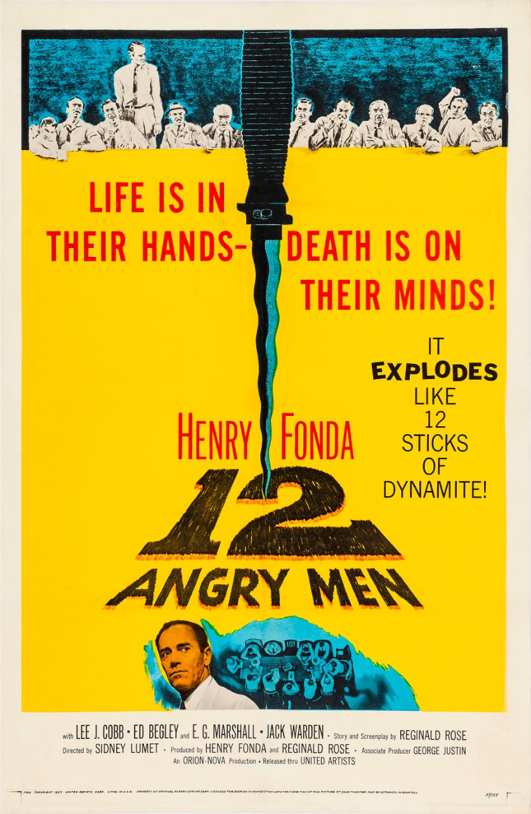

12 Angry Men
Languages: English
Runtime: 1h 36min
Genre: Crime, Drama
Release Date: 10 April 1957
IMDB Rating: 9/10
Languages: English
Runtime: 1h 36min
Genre: Crime, Drama
Release Date: 10 April 1957
IMDB Rating: 9/10
A jury holdout attempts to prevent a miscarriage of justice by forcing his colleagues to reconsider the evidence.
Director: Sidney Lumet
Writer: Reginald Rose (story), Reginald Rose (screenplay)
Stars: Henry Fonda, Lee J. Cobb, Martin Balsam